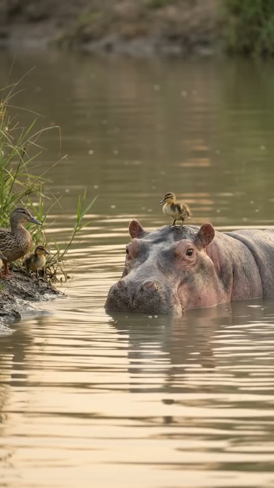
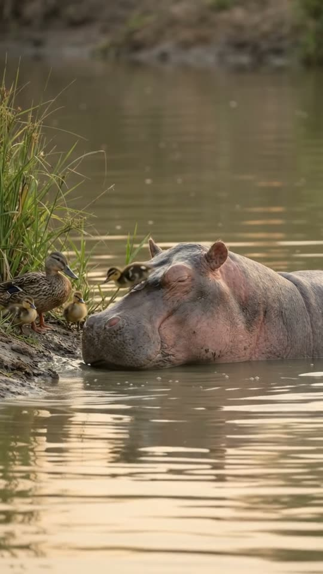
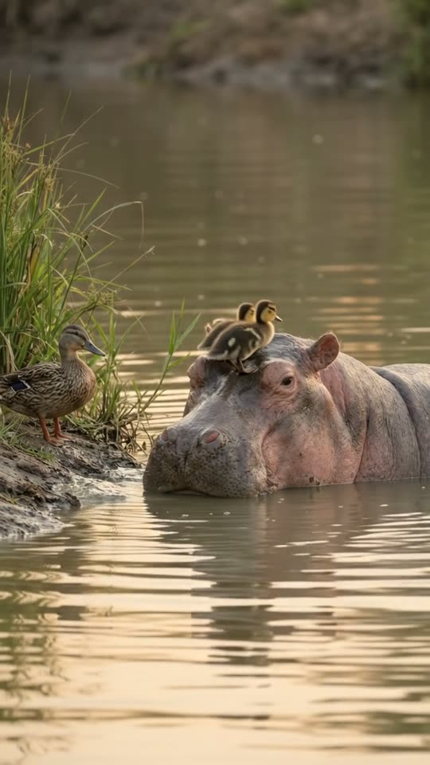
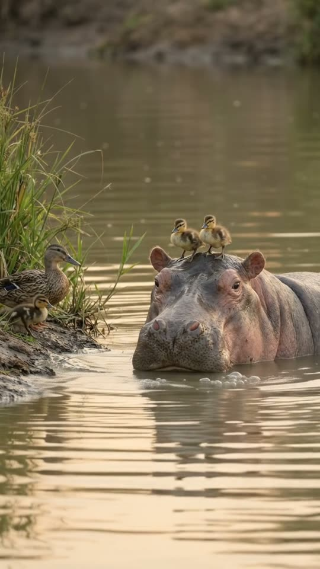

Free prompt pack
He was lost.The hippo gave him a lift.
A duckling sits on a hippo's head while it glides across the river to the bank where his mum is waiting. He hops off. Then his two brothers see the ride and climb on. One still image and one prompt, in one take.
Both prompts, in the order I ran them. Drag the hippo to the bank, gently, to reveal each prompt. Go too fast and the duckling falls in. Tap the river and another duckling swims over for a ride.
The first frame
The passenger is already aboard. This image is frame one: a hippo gliding across a calm river with only its head above the water, a tiny duckling sitting between its ears, and the mother duck with two more ducklings waiting on the bank.
Watch out
Put the duckling on the hippo and the family on the bank in the image, at the distances you want. The take can only move them; it shouldn't have to place them.

The prompt 115 words
Real wildlife photo taken with a long lens from a riverbank, soft golden morning light. A hippopotamus glides through calm brown-green water toward a muddy bank on the left, only its head above the surface: wet grey-pink skin, small round ears, bulging eyes, wide nostrils, water beading on its snout. Sitting on top of its head, right between its ears, a tiny fluffy mallard duckling, yellow and dark brown, beak open, peeping. At the water's edge on the left, a brown speckled mother mallard and two more ducklings stand on the mud, looking at them. Green reeds behind, soft ripples spreading from the hippo's head, warm reflections. Shallow depth of field, natural colour, sharp detail.
Across, off, on
Ten seconds, locked off from the far bank. Add the image as the reference, set 10 s, 9:16, 720p and audio on, and paste the prompt whole.
- 0–3 sthe crossing
- 3–6 shome to mum
- 6–8 sthe brothers climb on
- 8–10 stwo passengers
Watch out
Count the small animals everywhere you can: in their own block, in the physics and in the locks. 'Exactly three ducklings' kept the number right in every frame.
Fragments



The prompt 940 words
FORMAT Real wildlife video filmed with a long lens from a riverbank, seen as the finished exported video file: the full picture edge to edge, nothing on top of it. Whatever records the picture is never in frame. One continuous take in real time, no cuts. Vertical frame. The video runs at 24 fps. No frame is repeated. Real time, 1x speed, never slow motion. SCENE A hippo glides slowly across a calm river with a lost duckling sitting on top of its head, and brings it to the bank where its mother and two siblings are waiting. The hippo lowers its snout to the mud like a ramp; the duckling runs down it to its mother. Then the two other ducklings scramble up the hippo's snout and sit on its head, wanting a ride too, and the hippo wiggles its ears. The hippo is already gliding with the duckling on its head in the first frame. The take ends with two ducklings on the hippo's head and the mother duck with one duckling on the bank. REFERENCE IMAGE Use it for the hippo, the ducklings, the mother duck, the water, the bank, the reeds and the light. Everything matches it exactly, zero drift, no smoothing. The movement is described below. THE HIPPO One real hippopotamus, only its head above the water the whole take: wet grey-pink skin, small round ears, bulging eyes, wide nostrils, a broad snout. It moves like a real hippo in water: slow, heavy, smooth, pushing a low bow wave; its ears flick, its nostrils open and close. Its body stays under the water; it never stands up, never opens its mouth. THE DUCKS One brown speckled mother mallard and three real mallard ducklings, each the size of a fist: fluffy, yellow underneath and dark brown on top, a dark stripe through the eye, tiny dark beaks, orange feet. Ducklings move like real ducklings: quick little runs, wobbly hops, flapping stubby wings, peeping. Exactly three ducklings: one on the hippo at the start, two on the bank. LOCATION MAP We are on the bank opposite, 15 m away, at water level, looking across calm brown-green water. A muddy bank is on frame-left, where the mother duck and two ducklings stand at the water's edge. The hippo comes from the middle of the frame toward that bank, moving to frame-left. Green reeds fill the background; reflections in the water below. FIRST FRAME The hippo's head at x 45-85%, y 48-62%, facing frame-left, ripples behind it; the duckling on top of its head at x 60-68%, y 42-48%; the muddy bank at x 0-30%, y 50-66% with the mother duck at x 8-20%, y 46-58% and two ducklings beside her at x 18-28%, y 54-60%; the reeds at y 0-40%. Instant read: a duckling riding a hippo toward its mother. No delayed reveal. CAMERA Locked off on the opposite bank: a still frame with only the faintest natural movement of a long lens. It never pans, never zooms, never cuts, never moves closer. ACTION TIMING 0–3.0 s — The hippo glides slowly toward the bank on frame-left, a low ripple ahead of its snout; the duckling sits between its ears, peeping; the mother duck and the two ducklings peep back from the edge of the mud. 3.0–4.5 s — The hippo stops with its snout resting on the mud, half a metre from the mother, and lowers its chin so the top of its snout slopes down to the bank like a ramp. 4.5–6.0 s — The duckling runs down the hippo's snout and hops onto the mud, straight to its mother, who lowers her head and nuzzles it. 6.0–8.0 s — The two other ducklings look at the hippo, then scramble up its wet snout one after the other, slipping a little, and settle on top of its head between its ears. 8.0–10 s — The hippo, with two ducklings on its head, wiggles both ears and blows two small bubbles from its nostrils; the mother duck quacks once. Hold to the last frame. PHYSICS AND SCALE Real size: the hippo's head is about 1 m long, each duckling about 10 cm, the mother duck about 55 cm. The hippo moves at a slow walking pace and stops gently; its bow wave is small. The ducklings' feet slip on the wet skin and grip again. One hippo, one mother duck, exactly three ducklings. Nothing morphs. NO FULL-FRAME EVENTS Nothing fills the frame: the hippo, the ducks, the bank and the water stay in view in every frame. The splashes are tiny. LIGHTING Soft golden morning sun from frame-right, low and warm; gentle highlights on the wet hippo skin and the ducklings' fluff; calm reflections in the water. AUDIO No music, no score, no narration, no subtitles. Quiet river sounds: soft lapping water, a low hippo snort, the ducklings' high peeping, the mother's single quack at the end, two small bubble pops. No words. LOOK Real wildlife documentary footage shot on a long lens, seen as the finished exported file: shallow depth of field, crisp skin and feather detail, natural colour, no film grain, no lens flare, no slow motion, never CGI, never a cartoon. No camera app interface: no shutter button, no gallery thumbnail, no record button, no icons, no timer, no recording dot, no frame lines. POSITIVE LOCKS One hippo, one mother duck, exactly three ducklings. The hippo's body stays under water. No people, no boats. No captions, no subtitles, no on-screen text, no watermark, no logos, nothing on top of the picture. ONE HIPPO. THREE DUCKLINGS. NO CUTS. NO ZOOM. NO SLOW MOTION. NO MUSIC.
Rule 01
Biggest next to smallest
The most dangerous animal in Africa and a duckling the size of a fist. The contrast does the work before anything moves.
Rule 02
Count what's small
Models lose count of little animals first. Say how many there are and where each one is at the start and at the end.
Rule 03
Save the twist for last
The kindness gets them watching; the brothers climbing on gets them sharing. Give the twist its own beat at the end.
That's the whole build
Now go pairthe biggest with the smallest.
If yours works, send it over. I read every DM and the good ones end up on the account.
@martiiifons